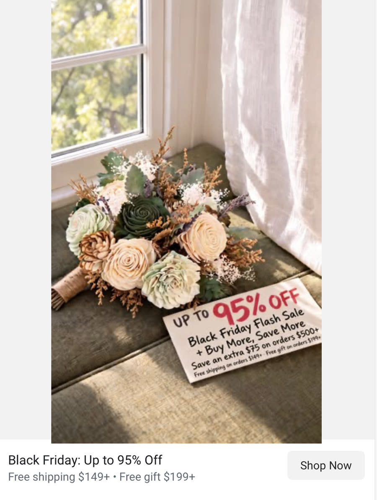

Brand's active adBrides cutting wedding costs. A proven audience, but almost the only one.
The partner as the buyer, not the receiver: gifting in the everyday dating scene.
BFCM runs as pure discount stacks, with no buyer signal to stop on.
An objection: a young woman who "doesn't like flowers." The contradiction stops casual scrollers and high-intent flower buyers alike.
Savings, framed for a wedding budget.
Her ROI logic, in the buyer's own terms: no watering, no weekly cost, less spend for both of them.
No emotional payoff for the giver.
"Every time I walk past, guess who I think about." Lasting flowers become a gift that pays the giver back.
Spec work to explore, not replace, a second segment. Not commissioned by or affiliated with Sola.